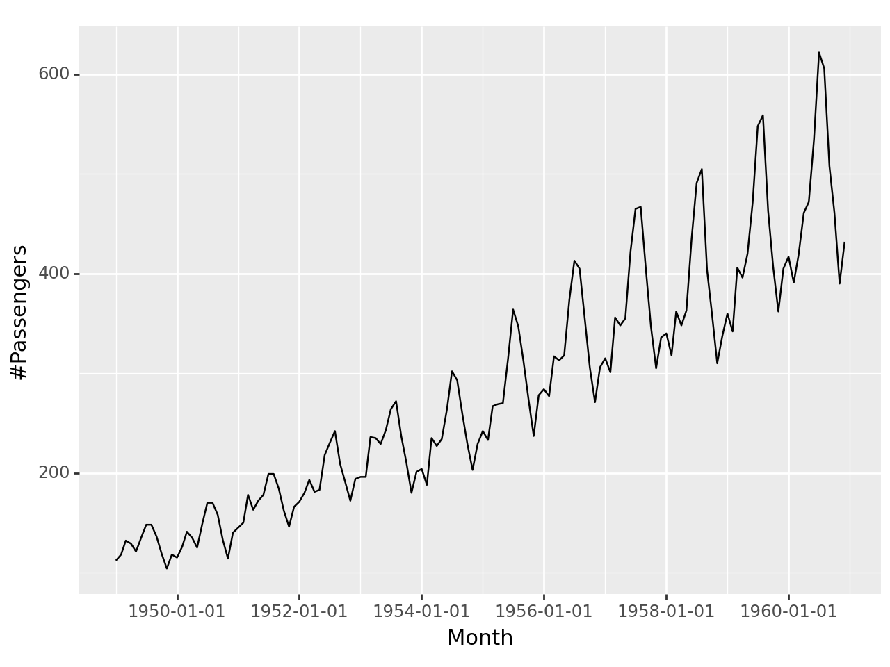

import pandas as pd
from pandas import *
import numpy as np
import plotnine as p9
from plotnine import *
import seaborn as sns
import matplotlib.pyplot as plt
import datetime
from datetime import *2 Import data, Subsetting data based on dates, Down sampling and Upsampling
2.1 Import CSV with dates
airpassenger = pd.read_csv('data/AirPassengers.csv', parse_dates=["Month"])
airpassenger
print(airpassenger.info())<class 'pandas.core.frame.DataFrame'>
RangeIndex: 144 entries, 0 to 143
Data columns (total 2 columns):
# Column Non-Null Count Dtype
--- ------ -------------- -----
0 Month 144 non-null datetime64[ns]
1 #Passengers 144 non-null int64
dtypes: datetime64[ns](1), int64(1)
memory usage: 2.4 KB
Noneggplot(airpassenger, aes(x='Month', y='#Passengers'))+geom_line()
<Figure Size: (640 x 480)>print(airpassenger['Month'].min())1949-01-01 00:00:002.2 Subseting
print(airpassenger.iloc[-6:, :6]) Month #Passengers
138 1960-07-01 622
139 1960-08-01 606
140 1960-09-01 508
141 1960-10-01 461
142 1960-11-01 390
143 1960-12-01 432print(airpassenger.iloc[:6]) Month #Passengers
0 1949-01-01 112
1 1949-02-01 118
2 1949-03-01 132
3 1949-04-01 129
4 1949-05-01 121
5 1949-06-01 1352.3 Subsetting based on Date Components
print(airpassenger.loc[(airpassenger.Month.dt.year == 1949) & (airpassenger.Month.dt.month == 8)]) Month #Passengers
7 1949-08-01 148print(airpassenger.loc[(airpassenger.Month.dt.year == 1949) & (airpassenger.Month.dt.month > 8)]) Month #Passengers
8 1949-09-01 136
9 1949-10-01 119
10 1949-11-01 104
11 1949-12-01 118print(airpassenger.loc[(airpassenger.Month.dt.year == 1949)]) Month #Passengers
0 1949-01-01 112
1 1949-02-01 118
2 1949-03-01 132
3 1949-04-01 129
4 1949-05-01 121
5 1949-06-01 135
6 1949-07-01 148
7 1949-08-01 148
8 1949-09-01 136
9 1949-10-01 119
10 1949-11-01 104
11 1949-12-01 1182.4 DatetimeIndex: pandas time series index by time
When working with datetime data, it is often required to set the datetime object to be the index of the dataframe.
airpassenger.index = airpassenger['Month']
print(airpassenger.index)DatetimeIndex(['1949-01-01', '1949-02-01', '1949-03-01', '1949-04-01',
'1949-05-01', '1949-06-01', '1949-07-01', '1949-08-01',
'1949-09-01', '1949-10-01',
...
'1960-03-01', '1960-04-01', '1960-05-01', '1960-06-01',
'1960-07-01', '1960-08-01', '1960-09-01', '1960-10-01',
'1960-11-01', '1960-12-01'],
dtype='datetime64[ns]', name='Month', length=144, freq=None)airpassenger| Month | #Passengers | |
|---|---|---|
| Month | ||
| 1949-01-01 | 1949-01-01 | 112 |
| 1949-02-01 | 1949-02-01 | 118 |
| 1949-03-01 | 1949-03-01 | 132 |
| 1949-04-01 | 1949-04-01 | 129 |
| 1949-05-01 | 1949-05-01 | 121 |
| ... | ... | ... |
| 1960-08-01 | 1960-08-01 | 606 |
| 1960-09-01 | 1960-09-01 | 508 |
| 1960-10-01 | 1960-10-01 | 461 |
| 1960-11-01 | 1960-11-01 | 390 |
| 1960-12-01 | 1960-12-01 | 432 |
144 rows × 2 columns
Now we can directly subset rows using date components.
print(airpassenger.loc['1949']) Month #Passengers
Month
1949-01-01 1949-01-01 112
1949-02-01 1949-02-01 118
1949-03-01 1949-03-01 132
1949-04-01 1949-04-01 129
1949-05-01 1949-05-01 121
1949-06-01 1949-06-01 135
1949-07-01 1949-07-01 148
1949-08-01 1949-08-01 148
1949-09-01 1949-09-01 136
1949-10-01 1949-10-01 119
1949-11-01 1949-11-01 104
1949-12-01 1949-12-01 118print(airpassenger.loc['1949-06']) Month #Passengers
Month
1949-06-01 1949-06-01 1352.5 Downsampling
Downsampling monthly values to yearly values
down = airpassenger.resample('Y').mean()
down| Month | #Passengers | |
|---|---|---|
| Month | ||
| 1949-12-31 | 1949-06-16 12:00:00 | 126.666667 |
| 1950-12-31 | 1950-06-16 12:00:00 | 139.666667 |
| 1951-12-31 | 1951-06-16 12:00:00 | 170.166667 |
| 1952-12-31 | 1952-06-16 08:00:00 | 197.000000 |
| 1953-12-31 | 1953-06-16 12:00:00 | 225.000000 |
| 1954-12-31 | 1954-06-16 12:00:00 | 238.916667 |
| 1955-12-31 | 1955-06-16 12:00:00 | 284.000000 |
| 1956-12-31 | 1956-06-16 08:00:00 | 328.250000 |
| 1957-12-31 | 1957-06-16 12:00:00 | 368.416667 |
| 1958-12-31 | 1958-06-16 12:00:00 | 381.000000 |
| 1959-12-31 | 1959-06-16 12:00:00 | 428.333333 |
| 1960-12-31 | 1960-06-16 08:00:00 | 476.166667 |
2.6 Upsampling
Upsample monthly values to daily values
up = airpassenger.resample('D').mean()
up| Month | #Passengers | |
|---|---|---|
| Month | ||
| 1949-01-01 | 1949-01-01 | 112.0 |
| 1949-01-02 | NaT | NaN |
| 1949-01-03 | NaT | NaN |
| 1949-01-04 | NaT | NaN |
| 1949-01-05 | NaT | NaN |
| ... | ... | ... |
| 1960-11-27 | NaT | NaN |
| 1960-11-28 | NaT | NaN |
| 1960-11-29 | NaT | NaN |
| 1960-11-30 | NaT | NaN |
| 1960-12-01 | 1960-12-01 | 432.0 |
4353 rows × 2 columns